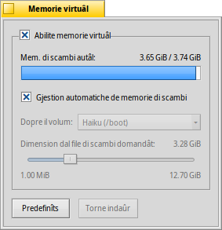

Català
Català Deutsch
Deutsch English
English Español
Español Français
Français Italiano
Italiano Magyar
Magyar Polski
Polski Português
Português Português (Brazil)
Português (Brazil) Română
Română Slovenčina
Slovenčina Suomi
Suomi Svenska
Svenska 中文 ［中文］
中文 ［中文］ Русский
Русский Українська
Українська 日本語
日本語 Memorie virtuâl
Memorie virtuâl
| Deskbar: | ||
| Posizion: | /boot/system/preferences/VirtualMemory | |
| Impostazions: | ~/config/settings/kernel/drivers/virtual_memory ~/config/settings/VM_data - Al archivie la posizion dal barcon dal panel. |
Memorie virtuâl al permet al sisteme di butâ sul disc fis la memorie, se la RAM e pues jessi doprade miôr par altris robis. Cussì, ancje se tu âs une vore di RAM, vê memorie virtuâl no je mai une brute idee.
Di norme, il file di scambi al ven scrit te partizion di inviament (boot). Se tu âs pocje memorie libare lì, tu puedis disativâ la e sielzi une altre partizion montade dal menù a tende. La dimension dal file di scambi e ven stabilide cul cursôr de sbare lì sot.
Se al capite dispès che la testine dal disc fis e pinduli masse par vie memorie di scambi virtuâl, tu puedis provâ a doprâ un disc fis separât pal to file di scambi in mût di evitâ une congjestion dal I/O. Une altre partizion sul stes disc fis dal sisteme/dâts no judarà. Aumentâ la RAM e je di sigûr la vie plui buine par risolvi il fastidi...
| al puarte dut ai valôrs predefinîts. | ||
| al torne a puartâ indaûr lis impostazions a chês che si veve ativis cuant che si à inviât lis preferencis di Memorie virtuâl. |